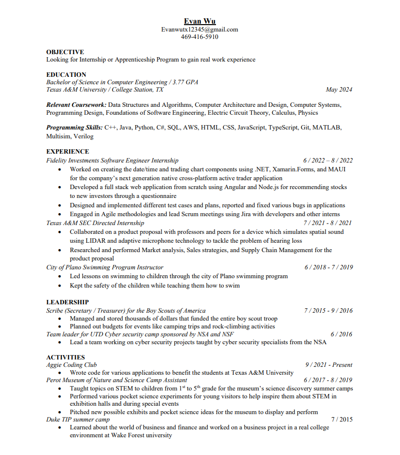

Click to download my Resume
My technical skills involve a variety of different coding languages from object oriented programming languages to scripting languages. I'm most proficient in C++ and Java while I have intermediate proficiency in the other languages. I'm also familiar with query languages like SQL and cloud services like AWS. On the electrical engineering side I'm proficient in Verilog, MATLAB, and Multisim. During the summer of 2022, I worked as a software engineer intern for Fidelity Investments. There I got to work with a variety of different technologies such as .NET, Angular, and NodeJS. I even got to work with, at the time, brand new technologies like MAUI which is a cross platform framework for creating native applications developed by Microsoft.
My current overall area of interest in Computer Science would be Data Science which although isn't completely related to computer science, there is a lot of overlap. I'm really interested in data analysis and how we can use computers to model and predict certain things based of the data. Data science is also a big component of artificial intelligence which I also find really interesting. I believe data is a pathway to understanding why different things happen so through computer science, I want to build data-intensive applications that can help people understand the world around us.